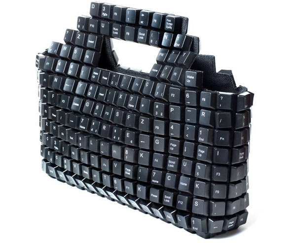

Ummm, how can you do Shift+a letter with one hand?
Actually, I can press left-shift and enter at the same time with a single hand.
Ummm, how can you do Shift+a letter with one hand?
I can touch the keypad and escape.
Beat that.
I can touch the keypad and escape.
Beat that.
I can touch the keypad and escape.
Beat that.
Do you realize how off-topic this thread has become?
I can touch both sides of my keyboard with one hand.



Shift to shift. My keyboard's rather large, but I can reach from the left control key to the numpad enter key.


I can do that, but I also hit " and Z at the same timeUmmm, how can you do Shift+a letter with one hand?Actually, I can press left-shift and enter at the same time with a single hand.

I can reach both Ctrls at the same time.o_0[/size

...What? If I try to press them I also have to hit the Windows key and the menu thingy.I can reach both Ctrls at the same time.o_0[/size
You must not have as wide a keyboard as me...What? If I try to press them I also have to hit the Windows key and the menu thingy.I can reach both Ctrls at the same time.o_0[/size

@samrat:I know. I have small hands. Also testing to see if anyone else got the joke.